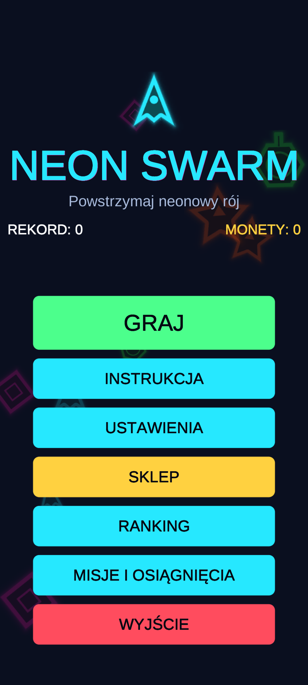
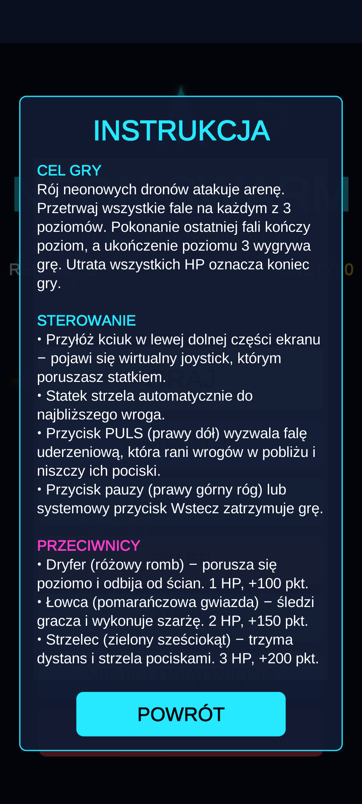
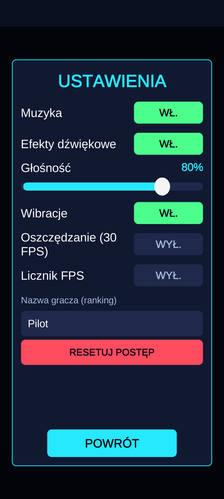
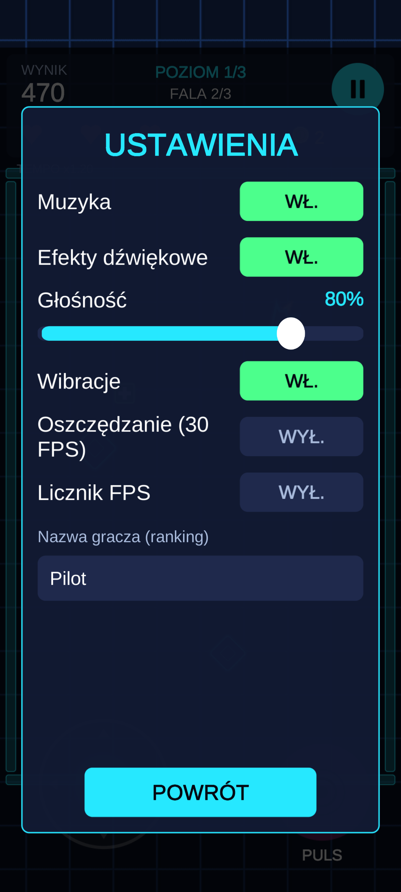
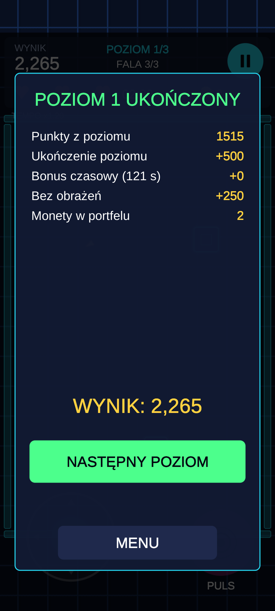
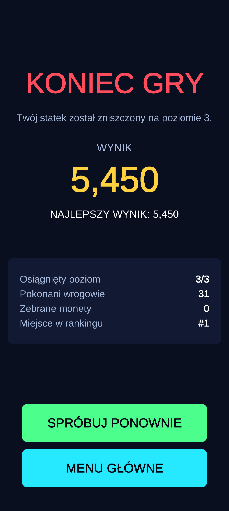
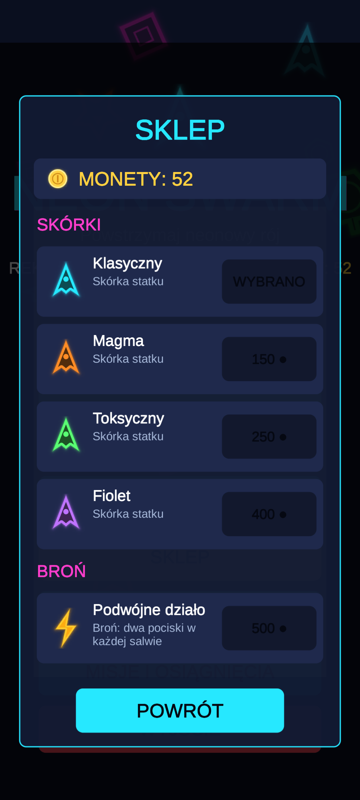
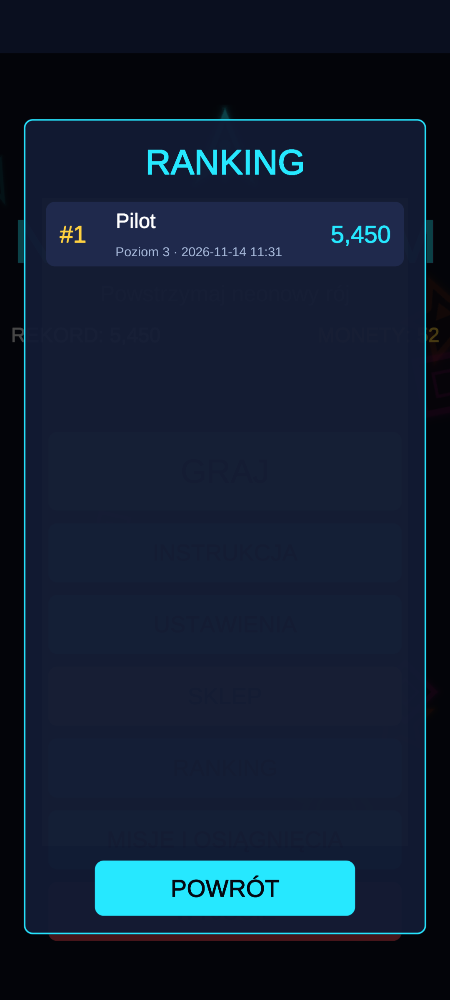
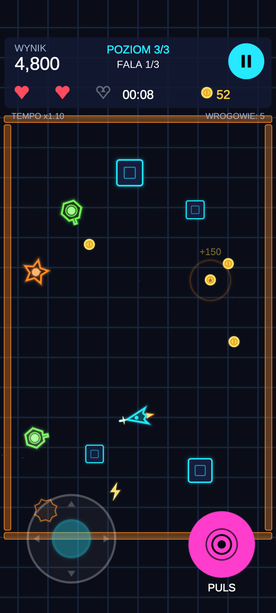

Mobilna gra zręcznościowa 2D na system Android wykonana w silniku Unity
Imię i nazwisko
Patrycja Brodzik
Numer albumu
50708
Kierunek
Informatyka
Przedmiot
Programowanie gier mobilnych
Temat projektu
Zaprojektowanie i wykonanie kompletnej gry mobilnej 2D „Neon Swarm” w silniku Unity
Rok akademicki
2026/2027
Silnik / język
Unity 2022.3.62f3 LTS / C#
Spis treści
Opis projektu
Założenia projektu
Mechanika gry
Architektura
Projekt interfejsu użytkownika
Implementacja – najważniejsze klasy C#
Testowanie
Optymalizacja
Podsumowanie
1. Opis projektu
Pozycja
Opis
Nazwa gry
Neon Swarm
Gatunek
gra zręcznościowa (arcade), top-down arena shooter 2D z elementami progresji (sklep, misje, osiągnięcia)
Platforma
Android 7.0 (API 24) i nowsze, architektury ARM64 i x86_64, orientacja pionowa (portrait)
Grupa docelowa
gracze mobilni od 10. roku życia, lubiący krótkie, dynamiczne sesje (3–6 minut na poziom), np. w komunikacji miejskiej. Gra nie zawiera przemocy wobec ludzi: przeciwnikami są abstrakcyjne, neonowe drony.
Tryb
jednoosobowy, offline. Wszystkie dane zapisują się lokalnie na urządzeniu.
Wersja
1.0.0 (versionCode 1), pakiet com.neonswarm.game
Gracz kieruje neonowym statkiem zamkniętym na arenie, którą atakują kolejne fale roju dronów. Statek sam celuje i strzela w najbliższego przeciwnika, więc zadaniem gracza jest manewrowanie: unikanie kontaktu z wrogami i ich pocisków, zbieranie bonusów oraz trafne użycie fali uderzeniowej (PULS). Gra ma trzy poziomy o rosnącej trudności, a ukończenie trzeciego oznacza zwycięstwo.
Oprócz wymagań podstawowych zrealizowano zakres rozszerzony: ranking, osiągnięcia, sklep, walutę, dynamiczną trudność, lokalną tabelę wyników, proceduralne generowanie poziomu, object pooling oraz system misji. Projekt ma też komplet scen z wariantu rozszerzonego (Boot, MainMenu, Level1–3, Settings, GameOver), trzy typy przeciwników i cztery rodzaje przedmiotów.
2. Założenia projektu
Problem
Gry akcji na telefony często przenoszą schemat sterowania z konsol (dwa joysticki, wiele przycisków), który na małym ekranie dotykowym bywa nieprecyzyjny i męczący. Kciuki zasłaniają obraz, a gracz musi jednocześnie celować i się poruszać. Krótkie sesje mobilne wymagają też, żeby rozgrywka zaczynała się natychmiast i dawała szybkie poczucie postępu.
Cel gry
Zaprojektować rozgrywkę na jeden kciuk: ruch pływającym joystickiem i automatyczny ogień, a jedyną decyzją taktyczną poza ruchem jest moment użycia PULSU.
Dać jasno określony cel: przetrwać wszystkie fale na trzech poziomach. Przegrana następuje po utracie wszystkich punktów życia.
Utrzymać zaangażowanie przez progresję: punkty, monety, sklep z ulepszeniami, misje, osiągnięcia i lokalny ranking.
Zapewnić płynne działanie (docelowo 60 FPS) dzięki optymalizacjom: puli obiektów, atlasowi sprite’ów, kompresji ASTC i ograniczeniu pracy w Update().
Wykorzystać praktycznie: sceny Unity, fizykę 2D, Animator, AudioMixer, UI z obsługą różnych rozdzielczości i safe area, zapis w JSON oraz testy jednostkowe.
Ograniczenia i decyzje
Orientacja pionowa: gra jest zaprojektowana do trzymania telefonu jedną ręką.
Grafika, dźwięki i muzyka są generowane proceduralnie przez skrypt edytora (ProjectBuilder), dzięki czemu projekt nie korzysta z zasobów o niejasnej licencji, a całą zawartość można odtworzyć jednym poleceniem.
Brak połączeń sieciowych: ranking i zapis są lokalne, co upraszcza wymagania dotyczące prywatności.
3. Mechanika gry
3.1 Ruch i sterowanie
Wybrano wariant B – wirtualny joystick, uzupełniony przyciskiem akcji. Joystick jest „pływający”: pojawia się w miejscu, w którym gracz dotknie lewej dolnej części ekranu (ok. 60% szerokości × 40% wysokości strefy bezpiecznej). Wychylenie gałki (z martwą strefą 12%) ustala kierunek i prędkość statku (maks. 5,6 j/s). Ruch realizuje Rigidbody2D z płynnym przyspieszaniem (Vector2.MoveTowards na prędkości), więc statek ma lekką bezwładność.
Uzasadnienie wyboru: joystick daje ciągły ruch w 360°, niezbędny do unikania pocisków na arenie. Przyciski kierunkowe (wariant A) ograniczają ruch do 8 kierunków, gesty (wariant C) są dyskretne i nie nadają się do ciągłego manewrowania, a akcelerometr (wariant D) jest mniej precyzyjny, męczy przy dłuższej grze i nie działa wygodnie, gdy gracz leży lub siedzi w pojeździe. Pływający joystick nie wymaga patrzenia na kontroler, bo kciuk zawsze trafia w jego środek. Automatyczne celowanie zwalnia drugi kciuk, którym gracz tylko od czasu do czasu naciska duży przycisk PULS (240 px przy 1080×1920).
Sterowanie
Działanie
Dotyk + przeciągnięcie (lewy dół)
ruch statku
Automatycznie
obrót i ogień w kierunku najbliższego wroga w zasięgu 9 j., do którego jest czysta linia strzału (co 0,3 s)
Przycisk PULS (prawy dół)
fala uderzeniowa o promieniu 2,8 j.: 2 obrażenia, odrzut, kasuje wrogie pociski; odnowienie 8 s
Przycisk pauzy / „Wstecz” Androida
pauza; w menu „Wstecz” zamyka otwarty panel
3.2 Walka
Pociski gracza (Projectile, kinematyczne ciało z triggerem) zadają 1 obrażenie i lekko odrzucają wroga. Przeciwnicy ranią gracza kontaktem (OnCollisionStay2D), a Strzelec także pociskami. Po trafieniu gracz ma 1,2 s nietykalności (miganie sprite’a), dostaje odrzut, ekran się trzęsie i telefon wibruje (opcjonalnie). Przedmiot „Turbo” podwaja szybkostrzelność, a „Tarcza” całkowicie blokuje obrażenia.
3.3 Przeciwnicy
Typ
Wygląd
Zachowanie
HP
Punkty
Dryfer (Enemy 1)
różowy romb
porusza się poziomo z falowaniem w pionie i powoli dryfuje w stronę wysokości gracza; odbija się od ścian i przeszkód
1
100
Łowca (Enemy 2)
pomarańczowa gwiazda
śledzi gracza, omijając filary (CircleCast); w odległości < 2,8 j. wykonuje szarżę (2,6× prędkość przez 0,35 s, odnowienie 2,2 s)
2
150
Strzelec (Enemy 3)
zielony sześciokąt z lufą
atakuje z dystansu: utrzymuje odległość ~4,6 j. i linię strzału, krąży wokół gracza, co 2,4 s ładuje strzał (0,4 s sygnalizacji) i strzela pociskiem
3
200
AI każdego wroga podejmuje decyzje co 0,2 s (metoda Think()), a w każdej klatce wykonuje tylko tanie operacje (Tick()). Każdy wróg pojawia się po 0,6 s sygnalizacji: na krawędzi areny wiruje portal, a punkt spawnu jest wybierany możliwie daleko od gracza (co najmniej 3,8 j.).
3.4 Przedmioty (obiekty interaktywne)
Przedmiot
Efekt
Źródło
Moneta
+10 pkt, +1 moneta do sklepu; przyciągana magnesem
wypada z wrogów (50–65%), grupy po 4
Apteczka
+1 HP (przy pełnym zdrowiu +25 pkt)
losowo co ~10–12 s; częściej przy 1 HP
Tarcza (power-up)
5 s nieśmiertelności (bańka wokół statku)
losowo
Turbo (power-up)
6 s podwójnej szybkostrzelności
losowo
Przedmioty znikają po 9–10 s, a przez ostatnie 2,5 s migają.
3.5 Punktacja
Akcja
Punkty
Pokonanie Dryfera / Łowcy / Strzelca
+100 / +150 / +200
Zebranie monety
+10
Zebranie power-upu (tarcza, turbo)
+20
Ukończenie poziomu
+500
Bonus czasowy
+50 za każde rozpoczęte 10 s poniżej czasu „par” poziomu (75 / 110 / 150 s)
Poziom ukończony bez obrażeń
+250
Wynik przechodzi między poziomami jednej rozgrywki. Restart poziomu przywraca wynik z chwili jego rozpoczęcia.
3.6 Poziomy
Poziom
Liczba wrogów w 1. fali
Fale (wrogów)
Prędkość
Typy wrogów
Przeszkody
Trudność
1 – Pierwszy kontakt
3
3 (3/4/5)
1,0
Dryfer, od 2. fali Łowca
2
łatwa
2 – Gniazdo łowców
6
3 (6/7/8)
1,3
Dryfer, Łowca, od 2. fali Strzelec
3
średnia
3 – Serce roju
10
3 (10/12/14)
1,6
wszystkie, szybszy ogień ×1,3
4
trudna
Kolejny poziom odblokowuje się po ukończeniu poprzedniego, a informacja o odblokowaniu zapisuje się w pliku. Między poziomami gracz widzi podsumowanie z przyciskiem „Następny poziom”. Liczby wrogów w falach są wartościami bazowymi, które dodatkowo koryguje dynamiczna trudność (rozdz. 3.8).
3.7 Zwycięstwo i przegrana
Zwycięstwo na poziomie: pokonanie wszystkich wrogów ze wszystkich fal. Po poziomie 3 wyświetla się ekran „ZWYCIĘSTWO!” (scena GameOver w trybie wygranej).
Przegrana: HP spada do 0, odtwarza się animacja śmierci (Animator: stan Dead), eksplozja i dźwięk, a po 1,6 s pojawia się ekran „KONIEC GRY” z wynikiem, rekordem, miejscem w rankingu i przyciskami „Spróbuj ponownie” oraz „Menu główne”.
Życie: 3 HP (+1 za każdy poziom ulepszenia „Pancerz”, maks. 5).
3.8 Elementy rozszerzone
Dynamiczna trudność: co 4 s DifficultyDirector ocenia zdrowie gracza, liczbę pokonanych wrogów na minutę i czas od ostatniego trafienia, po czym przesuwa wskaźnik TEMPO w zakresie 0,8–1,4. TEMPO zmienia prędkość wrogów, odstęp między spawnami, szybkostrzelność Strzelców i liczebność kolejnych fal.
Proceduralne generowanie: przy każdym starcie poziomu przeszkody (filary) losują się z ziarnem (rejection sampling z minimalnym odstępem i strefą bezpieczną wokół gracza), a skład każdej fali losuje się z wagami typów wrogów.
Sklep i waluta: monety można wydać na skórki (4), broń (podwójne działo), ulepszenia (pancerz, szybkostrzelność, generator pulsu, magnes) oraz power-up „tarcza startowa”.
Misje: zawsze 3 aktywne, np. „MISJA: Pokonaj 20 przeciwników – POSTĘP 13 / 20”, z nagrodą w monetach. Ukończona misja jest od razu zastępowana kolejną.
Osiągnięcia (7) i ranking 10 najlepszych wyników z nazwą gracza, poziomem i datą.
4. Architektura
Projekt podzielono na logiczne moduły (osobne foldery i przestrzeń nazw NeonSwarm). Kod gry tworzy assembly NeonSwarm.Runtime, generator zawartości i budowanie APK – NeonSwarm.Editor (tylko edytor), a testy – NeonSwarm.Tests.EditMode i NeonSwarm.Tests.PlayMode. Moduły komunikują się przez statyczną szynę zdarzeń GameEvents, więc np. HUD, system misji i dynamiczna trudność nie znają klas gracza ani przeciwników, a tylko reagują na zdarzenia.
4.1 Sceny i przejścia
Scena Boot wczytuje zapis, konfiguruje dźwięk i wyświetla pasek ładowania, a następnie przechodzi do MainMenu. Jeszcze przed załadowaniem pierwszej sceny (RuntimeInitializeOnLoadMethod) SystemsBootstrap tworzy trwały obiekt Systems (DontDestroyOnLoad) z menedżerem audio, ładowaniem scen z przejściem (fade), powiadomieniami i licznikiem FPS. Dzięki temu każdą scenę, również poziom, można uruchomić bezpośrednio w edytorze. Przejścia realizuje SceneLoader (asynchroniczne LoadSceneAsync + przyciemnienie ekranu).
Gracz i przeciwnicy mają dynamiczne Rigidbody2D (grawitacja 0, zablokowana rotacja) i CircleCollider2D. Pociski i przedmioty są ciałami kinematycznymi z colliderami ustawionymi jako trigger, ściany i filary to statyczne BoxCollider2D. O tym, co z czym koliduje, decyduje macierz warstw (PhysicsSetup):
wrogowie odpychają się nawzajem; Dryfer odbija się od ścian (OnCollisionEnter2D)
PlayerBullet / EnemyBullet
Enemy / Player oraz Obstacle
OnTriggerEnter2D → IDamageable.TakeDamage albo zniszczenie na przeszkodzie
Pickup
Player
OnTriggerEnter2D + CompareTag("Player")
Fala PULS korzysta z Physics2D.OverlapCircleNonAlloc z maską warstw Enemy i EnemyBullet, na stałym, wcześniej zaalokowanym buforze.
4.5 Animacje (Animator)
Gracz i przeciwnicy mają po 5 stanów: Idle, Run, Attack, Hurt, Dead. Przejścia z Any State do Attack i Hurt mają warunek Dead == false, więc martwy obiekt nie wraca do innych animacji. Klipy animują m.in. podmianę klatek płomienia silnika (krzywe sprite), skalę (odrzut przy strzale, „puchnięcie” przy trafieniu, zanikanie przy śmierci) oraz kanał alfa nakładki błysku. Łowca i Strzelec używają AnimatorOverrideController, który podmienia klip ataku na szarżę i ładowanie strzału, przy wspólnym kontrolerze bazowym.
5. Projekt interfejsu użytkownika
Interfejs zbudowano w Unity UI (uGUI). Każdy ekran ma Canvas w trybie Screen Space – Overlay z CanvasScaler (Scale With Screen Size, rozdzielczość referencyjna 1080×1920, dopasowanie 0,5), więc UI skaluje się na ekranach od 16:9 do 20:9. Elementy interaktywne leżą wewnątrz komponentu SafeArea, który omija wycięcia ekranu i pasek systemowy. Przyciski mają co najmniej 120 px wysokości w rozdzielczości referencyjnej (ok. 10 mm na telefonie), a przycisk PULS ma 240 px. Kolorystyka jest neonowa na ciemnym tle: cyjan to akcje główne, zielony – start i wznowienie, złoty – sklep i monety, czerwony – wyjście i niebezpieczeństwo. Zrzuty wykonano na emulatorze Android 14 (1080×2400).

Rys. 1. Ekran startowy: nazwa gry, rekord, monety i przyciski Graj, Instrukcja, Ustawienia, Sklep, Ranking, Misje i WyjścieRys. 2. Wybór poziomu: poziomy 2 i 3 są zablokowane do czasu ukończenia poprzedniego

Rys. 3. Instrukcja: cel, sterowanie, przeciwnicy, przedmioty i punktacja

Rys. 4. Scena Settings: muzyka, efekty, głośność, wibracje, tryb 30 FPS, licznik FPS, nazwa gracza i reset postępuRys. 5. Start poziomu: nazwa poziomu i odliczanie 3-2-1Rys. 6. Rozgrywka: HUD (wynik, poziom, fala, HP, czas, monety), joystick, przycisk PULS i powiadomienie o osiągnięciu
Rys. 7. Pauza: WZNÓW, OPCJE, RESTART POZIOMU, MENU; gra jest zatrzymana (timeScale = 0)

Rys. 8. Opcje otwarte z pauzy (ten sam komponent SettingsPanel co w scenie Settings)

Rys. 9. Podsumowanie poziomu z bonusami i przejściem do następnego poziomu

Rys. 10. Ekran Game Over: wynik, rekord, statystyki i miejsce w rankingu

Rys. 11. Sklep: skórki, broń, ulepszenia i power-upy za monetyRys. 12. Misje z paskiem postępu i nagrodą oraz lista osiągnięć

Rys. 13. Ranking: nazwa gracza, wynik, poziom i data

Rys. 14. Poziom 3: wszystkie trzy typy przeciwników, bonusy (turbo, monety) i utrata HPRys. 15. Restart poziomu: nowy, proceduralnie wygenerowany układ przeszkód
5.1 Elementy HUD
Element
Położenie
Opis
Wynik
lewy górny róg
aktualizowany zdarzeniem ScoreChanged, a nie w każdej klatce
Poziom i fala
środek paska
„POZIOM 1/3”, „FALA 2/3”, a przy starcie fali duży baner
Życie (HP)
pod wynikiem
ikony serc (pełne i puste), maks. 6
Czas
środek dolnej części paska
mm:ss; tekst zmienia się tylko przy zmianie pełnej sekundy
Monety
prawa strona paska
stan portfela
Stan gry
pod paskiem i na środku
TEMPO (dynamiczna trudność), liczba wrogów w fali, wskaźniki tarczy i turbo z czasem, banery i odliczanie
Pauza
prawy górny róg
okrągły przycisk 130 px
Joystick i PULS
dolne rogi
joystick pływający; PULS z radialnym wskaźnikiem odnowienia
6. Implementacja – najważniejsze klasy C#
Klasa
Odpowiedzialność
GameManager
Maszyna stanów poziomu (Intro → Playing ⇄ Paused → LevelComplete / GameOver). Uruchamia generator areny, fale, bonusy i trudność; obsługuje pauzę (Time.timeScale = 0, pauza dźwięków), OnApplicationPause, przycisk Wstecz, warunki zwycięstwa i przegranej oraz zapis wyników.
WaveSpawner, WavePlanner
Korutyna fal: wylicza rozmiar fali (bazowy × TEMPO), losuje jej skład z wagami (ziarno System.Random), wybiera punkt na krawędzi z dala od gracza, pokazuje portal i spawnuje wroga z puli. Fala kończy się, gdy nie ma żywych ani oczekujących wrogów.
DifficultyDirector, DifficultyModel
Dynamiczna trudność: co 4 s ocena HP, zabójstw na minutę i czasu od trafienia; intensywność 0,8–1,4 zmienia prędkość, odstępy spawnu, szybkostrzelność i liczebność.
ArenaGenerator
Granice areny i proceduralne rozmieszczenie filarów (rejection sampling), punkty spawnu.
Player + PlayerController, PlayerHealth, PlayerShooter, PlayerPulse
Fasada gracza nakładająca ulepszenia ze sklepu (PlayerLoadout); ruch z joysticka po Rigidbody2D; HP z nietykalnością, tarczą i śmiercią; auto-celowanie w najbliższego wroga (EnemyRegistry) i strzał z puli; fala uderzeniowa przez OverlapCircleNonAlloc.
EnemyBase + 3 podklasy
Wspólne HP, obrażenia kontaktowe, animacje, drop monet, punktacja i powrót do puli. Podklasy implementują tylko Think() (decyzje co 0,2 s) i Tick() (ruch, strzał).
Projectile
Pocisk z puli: prędkość kinematyczna, czas życia, trafienie przez interfejs IDamageable.
Pickup + 4 podklasy
Wzorzec template method: baza obsługuje trigger, czas życia, miganie i magnes, a podklasy tylko metodę Apply(Player).
PoolManager, ObjectPool, Poolable
Pule obiektów indeksowane prefabem, z rozgrzaniem (prewarm) przy starcie poziomu.
SaveSystem, SaveData
Zapis JSON (JsonUtility) do persistentDataPath: zapis atomowy przez plik tymczasowy, kopia .bak, odczyt z odtworzeniem domyślnych wartości po uszkodzeniu pliku.
Logika metagry w czystych klasach C# (testowalnych w EditMode): monety, misje, osiągnięcia, zakupy, ranking top 10.
AudioManager
Singleton z AudioMixerem (parametry MasterVolume, MusicVolume, SFXVolume w dB), źródłem muzyki z płynnym przejściem, pulą 10 źródeł SFX i ograniczeniem powtórzeń tego samego dźwięku.
SceneLoader, SystemsBootstrap
Asynchroniczne ładowanie scen z przyciemnieniem; automatyczne tworzenie trwałych systemów przed pierwszą sceną.
Obrażenia i nietykalność gracza – PlayerHealth.TakeDamage
if (IsShielded) { Fx.Hit(transform.position, shieldColor); return; }
if (Time.time < invulnerableUntil) return;
current = Mathf.Max(0, current - amount);
invulnerableUntil = Time.time + hitInvulnerability; // 1,2 s migania
rigidBody.AddForce(knockback, ForceMode2D.Impulse);
animator.SetTrigger(HurtHash);
AudioManager.Play(SfxId.PlayerHurt);
GameEvents.RaisePlayerHealthChanged(current, max);
if (current == 0) Die(); // Animator: Dead = true
Losowanie składu fali – WavePlanner.PlanWave
while (plan.Count < count)
{
var roll = random.Next(totalWeight); // ziarno → powtarzalność (testy)
foreach (var entry in available) // tylko typy odblokowane w tej fali
{
roll -= entry.weight;
if (roll < 0) { plan.Add(entry.kind); break; }
}
}
Ustawienia dźwięku przez AudioMixer – AudioManager.ApplySettings
powtarzalność dla ziarna, typy wrogów od właściwej fali
OK
DifficultyModel_StaysWithinBounds
EditMode
dynamiczna trudność w zakresie 0,8–1,4
OK
FinishRun_FlagsNewRecord…
EditMode
flaga „Nowy rekord” i wpis do rankingu
OK
GameSession_RestartRestoresScoreFromLevelStart
EditMode
restart przywraca wynik z początku poziomu
OK
Boot_LoadsMainMenu
PlayMode
Boot → MainMenu, otwarcie wyboru poziomu bez błędów
OK
SettingsScene_Loads
PlayMode
scena ustawień z otwartym panelem
OK
Level1_StartsSpawnsEnemiesAndPauses
PlayMode
start poziomu, 3 HP, spawn wrogów, pauza i wznowienie
OK
Player_DiesAndGameOverSceneLoads
PlayMode
obrażenia, nietykalność, śmierć → scena GameOver, statystyki
OK
Level1_ClearingAllWavesUnlocksLevel2
PlayMode
ukończenie wszystkich fal → odblokowanie poziomu 2, bonus 500
OK
Enemies_StayInsideArenaAfterStrongKnockback
PlayMode
test regresyjny: wrogowie nie wylatują poza arenę
OK
Level2_IdlePlayerWavesKeepProgressing
PlayMode
test regresyjny: fale poziomu 2 kończą się bez zawieszenia
OK
ReusedEnemyFromPool_HasFullSizeVisualAndIsNotDead
PlayMode
obiekt z puli wraca z poprawnym stanem animacji
OK
7.3 Błędy wykryte i naprawione podczas testów
Objaw
Przyczyna
Poprawka
Wyjątek NullReferenceException przy wejściu do menu, przyciski wyboru poziomu nie działały
Generator UI nie zapisywał referencji przycisków w tablicy levelButtons
Uzupełnienie przypisania; test PlayMode Boot_LoadsMainMenu otwiera panel wyboru poziomu
Fala nie kończyła się, licznik wrogów > 0, a na ekranie brak przeciwników
PULS przy samej ścianie „przepychał” wroga przez cienki (0,3 j.) collider ściany
Collidery ścian o grubości 2 j. skierowane na zewnątrz, ciągła detekcja kolizji wrogów, zabezpieczenie KeepInsideArena, słabszy odrzut; test regresyjny Enemies_StayInsideArenaAfterStrongKnockback
Łowca „zawieszał się” za filarem; statek strzelał w filar
Brak omijania przeszkód i sprawdzania linii strzału
AvoidObstacles (CircleCast + ruch wzdłuż krawędzi), wybór celu z linią wzroku (FindNearestVisible)
Żywy Dryfer miał zmniejszony do kropki sprite
Po powrocie z puli Animator mógł zachować skalę z animacji śmierci (kolejność ponownego wiązania na urządzeniu)
Reset stanu wizualnego i Animator.Rebind() przed zwrotem do puli oraz zabezpieczenie w Think()
Nagroda za misję znikała po zamknięciu aplikacji
Zapis tylko na końcu poziomu
Zapis przy pauzie aplikacji (AppLifecycle), po ukończeniu misji i odblokowaniu osiągnięcia
Po restarcie poziomu wynik startował od 100 pkt
Scena działała jeszcze podczas wygaszania ekranu i naliczała punkty
SceneLoader zatrzymuje czas gry (timeScale = 0) na czas przejścia
Długa nazwa w sklepie nachodziła na opis
Za wąska kolumna nazwy
Poprawiony układ wiersza sklepu
8. Optymalizacja
Zastosowano dziewięć technik optymalizacji (wymagane były co najmniej trzy):
Technika
Realizacja w projekcie
Efekt
Object pooling
PoolManager/ObjectPool dla pocisków gracza (prewarm 30) i wrogów (20), przeciwników (3×8), monet i bonusów, efektów cząsteczkowych i napisów „+100”. Obiekty są wyłączane i ponownie używane, a nie niszczone (Destroy) i tworzone (Instantiate) w czasie gry.
brak alokacji i skoków GC podczas walki
Ograniczenie pracy w Update()
AI wrogów podejmuje decyzje co 0,2 s z losowym przesunięciem fazy (Think()), a dynamiczna trudność liczy się co 4 s. HUD aktualizuje wynik, HP i monety przez zdarzenia, a czas tylko przy zmianie sekundy. Hashe parametrów Animatora (Animator.StringToHash) i komponenty są cache’owane w Awake.
mniej pracy na klatkę, mniej alokacji stringów
Rejestr wrogów zamiast wyszukiwania
EnemyRegistry (lista aktywnych wrogów) zamiast FindObjectsOfType; wyszukiwanie najbliższego celu porównuje kwadraty odległości (sqrMagnitude, bez pierwiastka).
O(n) bez skanowania sceny
Fizyka bez alokacji
PULS używa Physics2D.OverlapCircleNonAlloc ze stałym buforem. Macierz kolizji warstw wyłącza zbędne pary (np. pocisk–pocisk, pocisk–przedmiot). Pociski są kinematyczne.
mniej par kolizji do sprawdzenia
Atlas sprite’ów
Wszystkie sprite’y gry i UI (oprócz kafelkowanego tła) trafiają do jednego Sprite Atlas.
batching: mniej draw calls
Kompresja i optymalizacja tekstur
ASTC 6×6 dla Androida, wyłączone mipmapy (gra 2D w stałej skali), rozmiary 32–256 px, maksymalny rozmiar tekstury równy rozmiarowi źródła.
mniejszy APK i zużycie VRAM
Kompresja audio
Efekty: ADPCM, mono, Decompress On Load (krótkie, odtwarzane bez opóźnień). Muzyka: Vorbis (jakość 45%), mono, Streaming, ładowanie w tle. Pula 10 źródeł AudioSource z ograniczeniem powtórzeń tego samego dźwięku (np. strzał nie częściej niż co 60 ms).
mniej RAM i CPU na audio
Ustawienia jakości i renderowania
Wyłączone cienie, antyaliasing, oświetlenie pikselowe, odbicia i miękkie cząsteczki. Przestrzeń kolorów Gamma, OpenGL ES 3, wielowątkowe renderowanie, Optimized Frame Pacing, targetFrameRate 60 (30 w trybie oszczędzania baterii), brak HDR i MSAA w kamerze.
stabilne 60 FPS, niższe zużycie baterii
Limity efektów i budowy
Maks. 6 efektów nieistotnych (iskry, napisy) na klatkę, maksymalna liczba jednoczesnych wrogów na poziom (6/8/11), maxParticles ograniczone do 2× wielkości wybuchu. IL2CPP z Managed Stripping (Low), usunięte zbędne pakiety (Ads, IAP, Analytics, Timeline, TextMeshPro), osobne assembly definitions.
przewidywalne obciążenie, APK 25 MB
Wydajność można kontrolować wbudowanym licznikiem FPS (Ustawienia → Licznik FPS), który pokazuje też liczbę pul i obiektów w pulach.
9. Podsumowanie
9.1 Wnioski
Zrealizowano kompletną grę mobilną na Androida, która spełnia wszystkie wymagania podstawowe projektu (ekran startowy, sterowanie dotykowe, punktacja, przeciwnicy i przeszkody, warunki zwycięstwa i przegranej, HP i Game Over, 3 poziomy o rosnącej trudności, HUD, pauza, zapis, dźwięk z AudioMixerem, ustawienia, animacje w Animatorze, fizyka 2D, przedmioty, optymalizacja, testy). Zrealizowano też wszystkie pozycje A–I z listy wymagań dodatkowych: ranking, osiągnięcia, sklep, walutę, dynamiczną trudność, lokalną tabelę wyników, proceduralne generowanie, object pooling i misje.
Najważniejsze wnioski z realizacji:
Sterowanie na jeden kciuk (pływający joystick + automatyczny ogień) dobrze sprawdza się na małym ekranie. Decyzja taktyczna została przeniesiona na ruch i moment użycia PULSU.
Szyna zdarzeń (GameEvents) bardzo uprościła dodawanie funkcji metagry: misje, osiągnięcia i dynamiczna trudność nie wymagały zmian w klasach gracza ani przeciwników.
Wydzielenie logiki do czystych klas C# (sklep, misje, ranking, plan fal, model trudności, zapis) pozwoliło pokryć ją szybkimi testami EditMode. Testy PlayMode wykryły realne błędy integracji, np. niepodpięte referencje przycisków wyboru poziomu.
Testy na emulatorze ujawniły problem, którego nie widać w testach jednostkowych: fala uderzeniowa przy samej ścianie potrafiła „przepchnąć” przeciwnika przez cienki collider, przez co fala nie mogła się zakończyć. Rozwiązanie: grubsze collidery ścian, ciągła detekcja kolizji wrogów i zabezpieczenie utrzymujące obiekty w granicach areny (oraz test regresyjny).
Generowanie zawartości kodem (grafika SDF, synteza dźwięku, sceny i prefaby) daje w pełni odtwarzalny projekt bez zewnętrznych zasobów i problemów licencyjnych.
9.2 Możliwe kierunki rozwoju
Ranking online i konta graczy (REST API, np. własny serwer lub Unity Gaming Services), zapis w chmurze.
Walka z bossem na końcu poziomu 3 i więcej typów przeciwników (np. dzielący się rój, kamikaze).
Tryb nieskończony z proceduralnymi falami i rosnącą trudnością.
Grafika ręcznie rysowana lub efekty postprocessingu (bloom) przy przejściu na URP 2D.
Lokalizacja (angielski) oraz opcje dostępności: tryb dla daltonistów, większy joystick, joystick stały zamiast pływającego.
Publikacja w Google Play: Android App Bundle, podpis produkcyjny, analityka i raporty błędów.